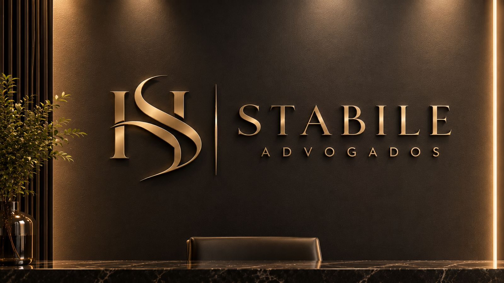

Manual de aplicação · proposta 03
O S atravessa o H em uma curva longa. Transmite fluidez e continuidade.
Versão horizontal. É a assinatura preferencial em todas as peças.
O monograma HS pode ser usado sozinho quando o espaço é pequeno ou quadrado: avatar de redes sociais, favicon, carimbo, selo em papelaria.
Use sempre uma destas quatro combinações. Elas garantem contraste e mantêm a marca reconhecível.
O dourado é a cor da marca. Grafite e azul-marinho são os fundos institucionais; o marfim é o fundo claro das peças.
Famílias gratuitas (Google Fonts), fáceis de usar em qualquer peça.
STABILE ADVOGADOS
CinzelDefendendo o que é seu por direito
EB GaramondAtendimento em todo o Brasil, com acompanhamento do início ao fim do processo.
InterMantenha livre em volta da logo um espaço igual à altura da letra “S” do nome (x). Abaixo do tamanho mínimo, use só o símbolo.
Para a marca continuar firme e reconhecível, evite:
Exemplos de como a marca se comporta no dia a dia do escritório.

(62) 3010-0113
Rua 14, Ed. Flamboyant Park Business
Jardim Goiás · Goiânia (GO)